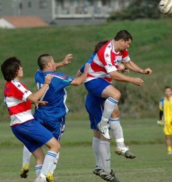
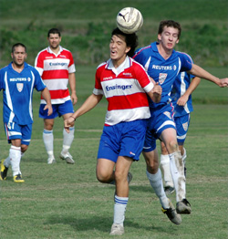
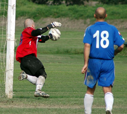
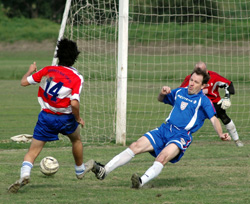

|
Misato, Saturday 6th October,
"There was a bit of waiting around before the game. The pitch was out of date chocolate cake with a nice green mould all over the surface. BFC had just snatched a win against Geckos by a Brian Doyle - as Kev Gray once called "deus ex machina" - goal. Looking on, Alex S was going to use the fudge cake to his advantage he said. We began with caution, which is never a good idea by the way, and were soon in a stop start rythym of our own making. Eyes large as marmosets, we watched the game more than we played it in the early first half. Ged was on edge, shouting his head off. Richard pensive on the line. The sun had come out, the wind rose in our faces and the first half was painfully hard work for us.
The swiss came down our right wing winning a few free kicks and corners. But we held on. Maz and Simon were fighthing each other for the midfield ball. Then Paul hit his stride - the only vags player who could dribble today. He dazzled but didnt finish. Nevertheless it geed us up, that and Fergie - "the Irish Terrier`s" inexhaustible banter, and we walked off at half time 0-0, expecting a goal to come our way in the second half. Nao had the most work to do among the defenders in that half and credit to him for doing it with modest style.

Second half the Swiss stepped up a notch, their 2 strikers clicked and quickly started getting strikes on target. Taylor dealt with all off them. No problem. But suddenly the Vagabonds were forced to shuffle the defense. Gary had been hauled off a bit earlier, he was simply useless, the Ged was given a daytime view of Orion from a trailing Swiss boot. Who was it hurt you Ged, son? After he came off, naturally we started to look a bit like marmosets again - big eyes and slow bodies. Back to 4-4-2 from the hitherto 3-5-2 was almost inevitable as the game was getting on and still 0-0, and our regular defence was missing. This I believe was wrong, but only with the benefit of hindsight. We squandered the midfield - especially Maz who just ended up doing the same work as in midfield, only 20 yard deeper.
Then Gary came back on to seal it for the Swiss. Almost immediately they scored, the stan of the Swiss` laurel and hardy strike team, Dave Pratt, cut inside and blasted a dipping strike past Taylor. Within minutes, Gary gave Oliver his turn and the lanky striker strode away with the pass and scored past Taylor in a 1 on 1. Then the 3rd, again for Kirk. All Swiss goals came within the last 10-15 mintues of the game. ALL of them defensive mistakes and a bit harsh on Taylor who scored 8.5/10 today on his performance.
Vagabonds took a large dose of bitter medicine today. But if they can keep it down and not puke it up (i.e. mope and lose confidence - you know what I mean) then we will be a bit more immune to the disease of defeat next time. There are huge lessons to learn from a game like this. As a team Richard has the birds eye view - as individuals we each know how we can improve our performence/compensate for being a bit old, a bit talentless etc - using our grey matter. Lets not be ashamed of todays game nor let if define us. Apart from one or two players who were so bad words escape me, most of the team were somwhere below par today. That should be enough to annoy us into doing better.

After the game we had BFC and Vagabonds day/night out in Shibuya - a rare occaison and one I hope we can repeat more often. Garry Robertson kept me entertained for nearly an hour - if you dont know him yet he`s a good fella to have near if you find yourself trapped in a bar with an unlimited supply of a liquor. After they kicked us out of the Hobgoblin there were shenanigans on the street. I wont give any details except to mention Gordon was involved... and traffic cones.
Lastly, there is rare disorder where a person believes one of their limbs (usually a leg or foot) doesnt belong to them and they wish to have it amputated. If anyone knows more about this please contact Simon Sparkes or Gary Quinn."
Report by Gary Quinn
|